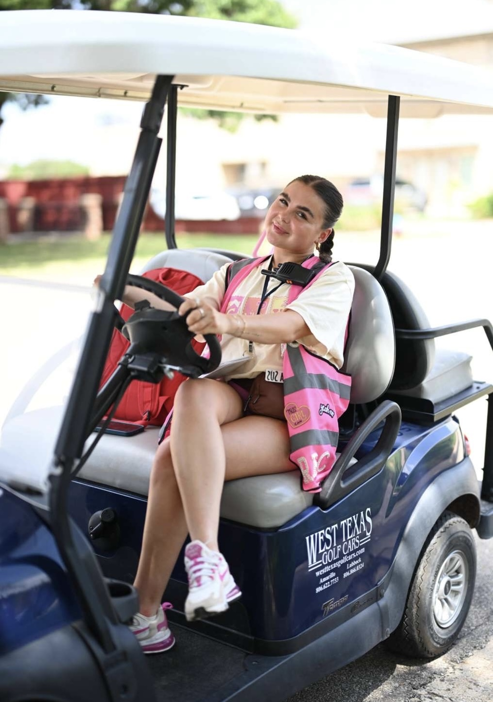
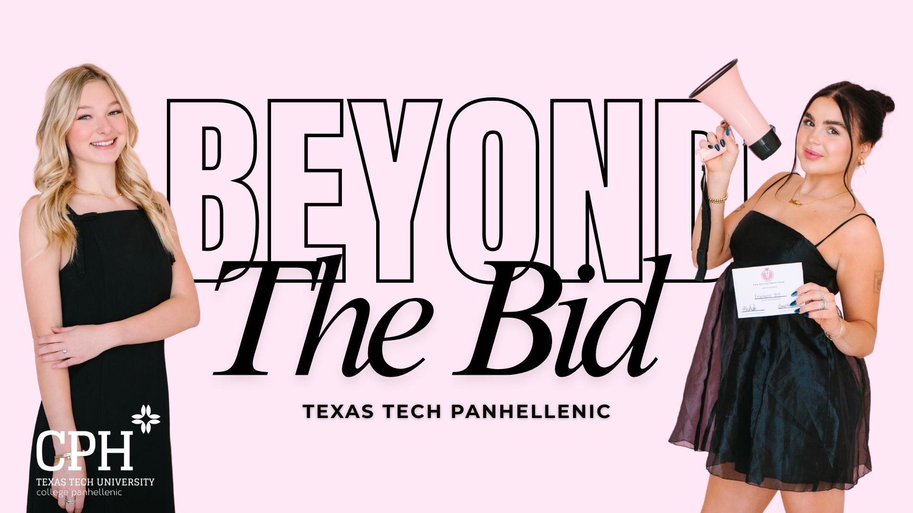
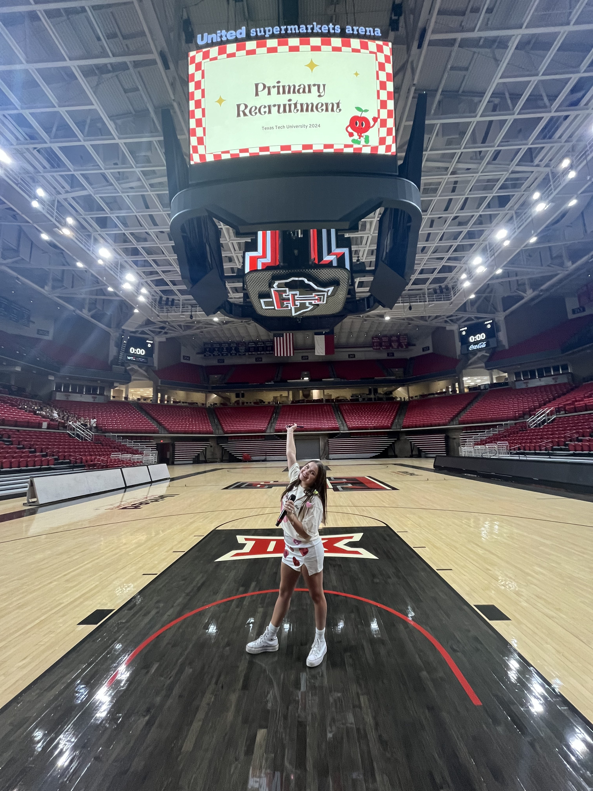
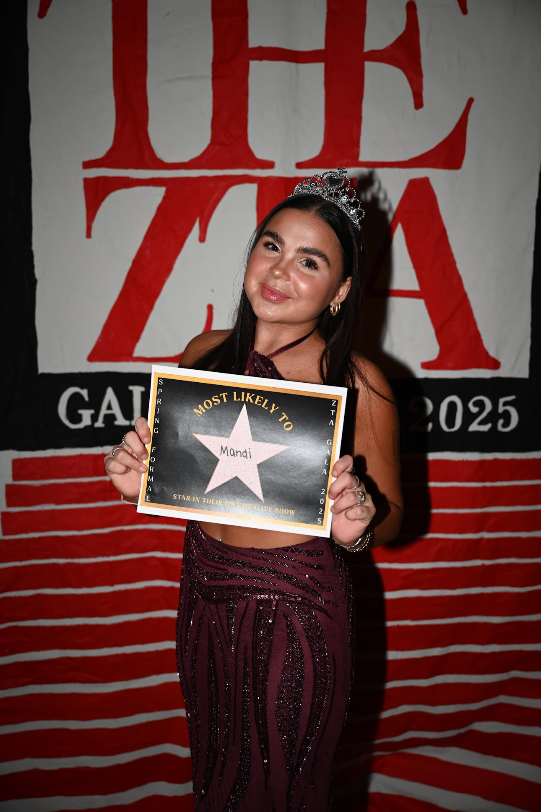
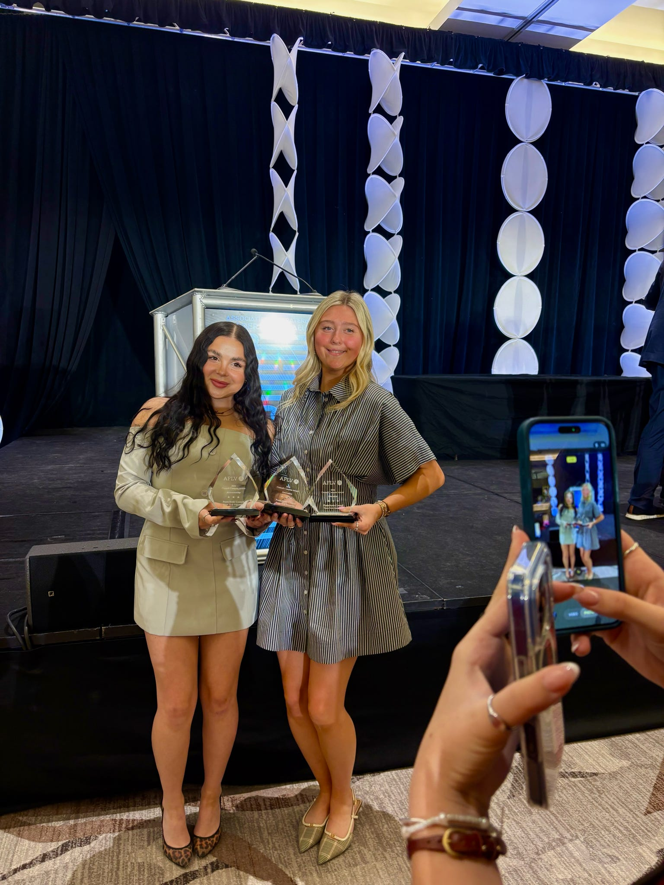

College Leadership & Involvement
Throughout my time at Texas Tech University, I have been heavily involved in the Panhellenic community and Greek leadership. My roles have allowed me to develop skills in leadership, event planning, program development, communication, and large-scale coordination.

Vice President of Recruitment
Panhellenic Executive Council | 2025
As Vice President of Recruitment for the Texas Tech Panhellenic community, I oversaw the primary recruitment process for 12 chapters and more than 1,000 potential new members. This position required extensive planning, communication, and leadership across the entire Panhellenic community.
- Managed a $150,000 recruitment operating budget and coordinated vendor contracts.
- Led the Recruitment Executive Board and supervised more than 50 recruitment counselors. Oversaw Primary Recruitment for the entire 3,500 member community.
- Created a 50-page Panhellenic recruitment guidebook designed to help members understand recruitment expectations, policies, and leadership responsibilities.
- Developed a 85-page Potential New Member (PNM) guided journal to help women reflect on their values, priorities, and experiences during recruitment.
- Produced and hosted a recruitment podcast answering common questions and helping PNMs better understand the Panhellenic community.
View Recruitment Guidebook:
Open the 50-Page Recruitment Guidebook (PDF)
View PNM Guided Journal:
Open the 85-Page PNM Journal (PDF)

Panhellenic Recruitment Podcast
To help potential new members better understand the recruitment process, I created and hosted a podcast that answered common questions and explained how recruitment works within the Panhellenic community.
- Produced podcast content addressing recruitment expectations and common concerns.
- Helped PNMs gain a better understanding of Panhellenic values and recruitment structure.
- Created supporting educational content to improve recruitment transparency.

Associate Vice President of Recruitment
Panhellenic Executive Council | 2024
In this role, I supported recruitment operations and communication for the Panhellenic community while helping coordinate large-scale recruitment logistics and outreach.
- Managed contracts, purchasing, and recruitment supplies.
- Communicated with potential new members regarding registration, deadlines, and recruitment expectations.
- Collaborated with council leadership to increase recruitment participation through marketing and outreach.
- Co-led more than 50 women serving as recruitment counselors.

Director of Socials
Zeta Tau Alpha | 2025
As Director of Socials for Zeta Tau Alpha, I planned and coordinated social events while ensuring compliance with university policies and chapter standards.
- Planned mixers, formal events, and chapter social programming.
- Coordinated vendors, venues, and event logistics.
- Managed budgets and communication for social events.
- Ensured events followed university and sorority guidelines.

Vice President
Order of Omega | 2025
Order of Omega is a Greek leadership honor society that recognizes the top leaders in fraternity and sorority communities. As Vice President, I helped support leadership programming and member engagement.
- Assisted the president in leading the organization.
- Planned leadership and networking events.
- Facilitated communication with members and university staff.
- Supported recruitment and member selection processes.
Additional Involvement
- Junior Panhellenic Member — 2023
- Bylaws Committee Member — 2025
- Program Council Member — 2025
- Nominating Committee Member — 2024–2025
- New Member Committee Member — 2024–2025
- Belonging Committee Member — 2023–2024
- Philanthropy Committee Member — Sponsorship Chair (2023)
- Philanthropy Committee Member — Contestant Chair (2025)
- Lodge Committee Member — 2023–2025